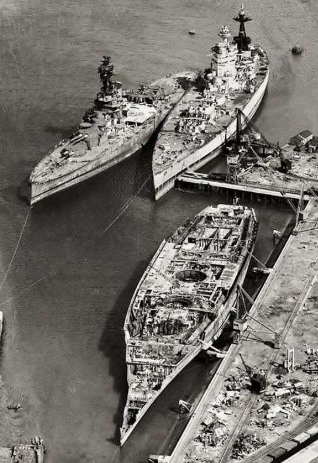
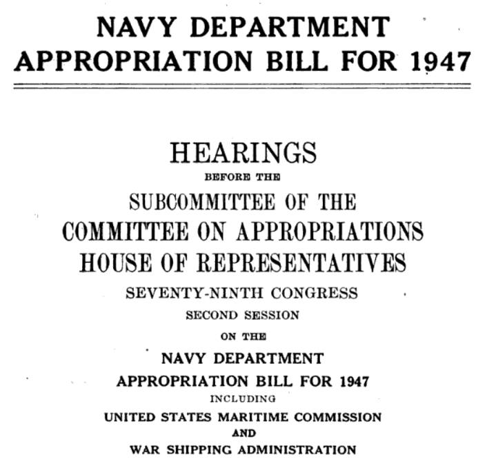
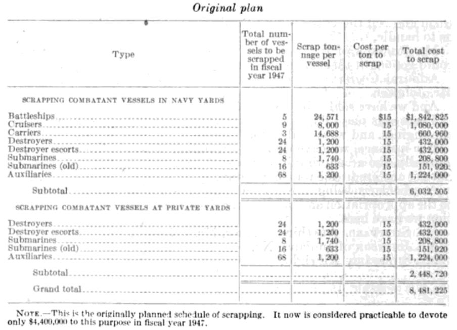
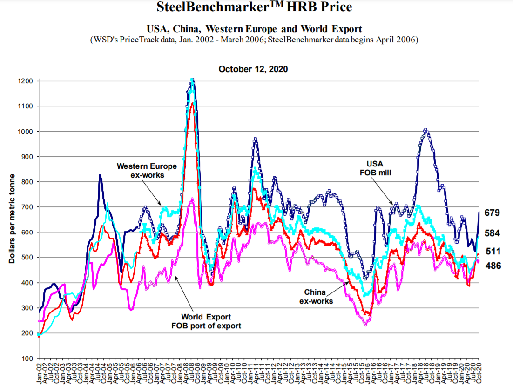
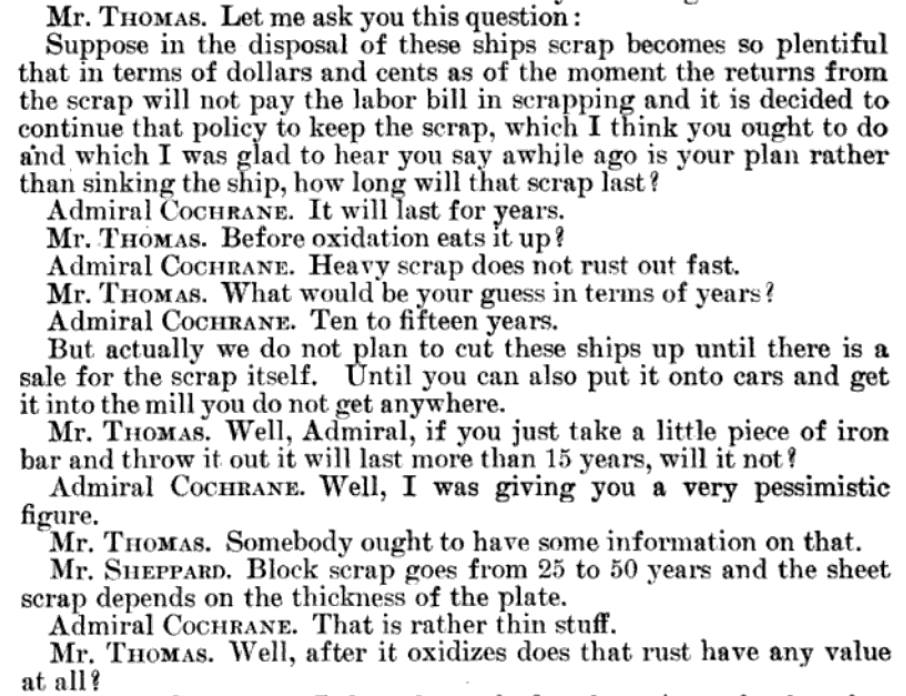
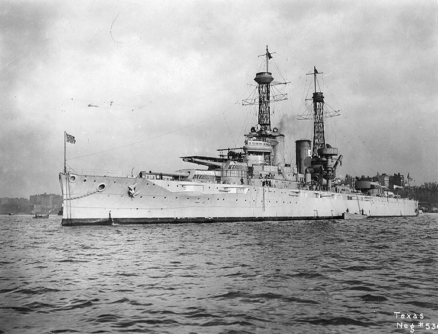
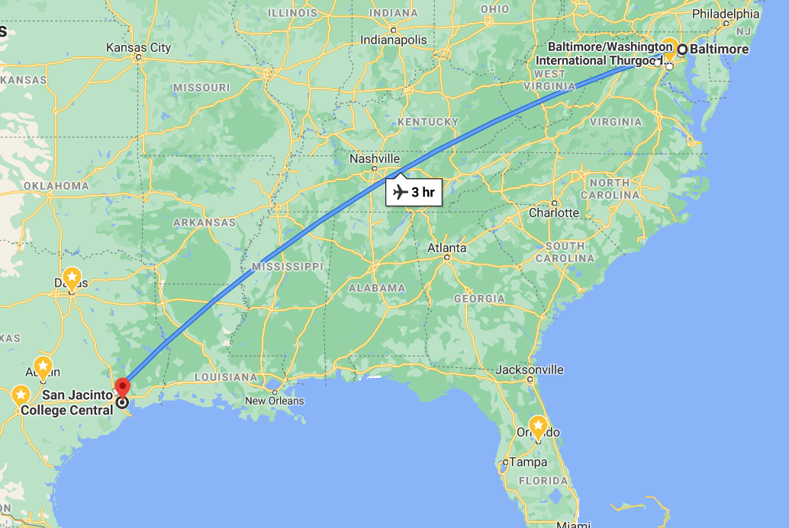
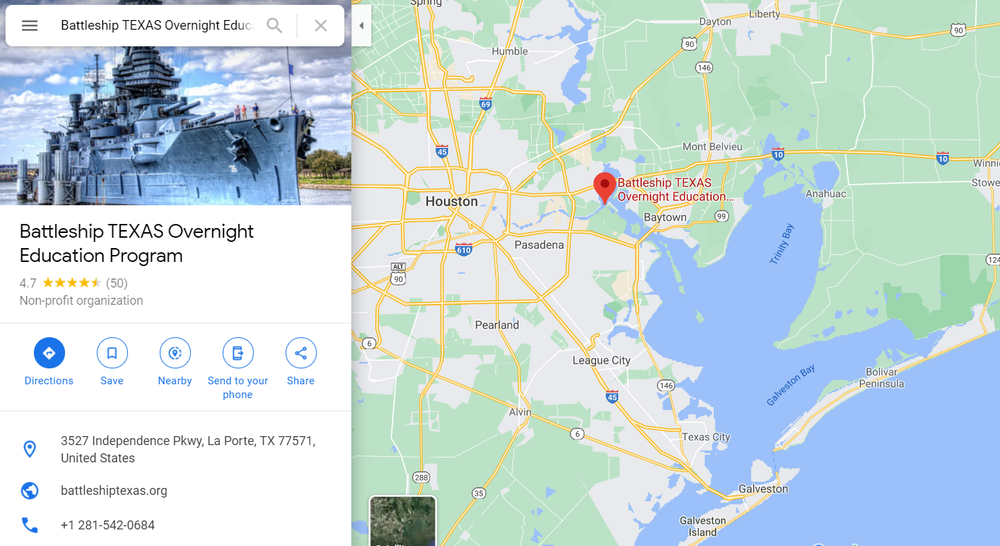
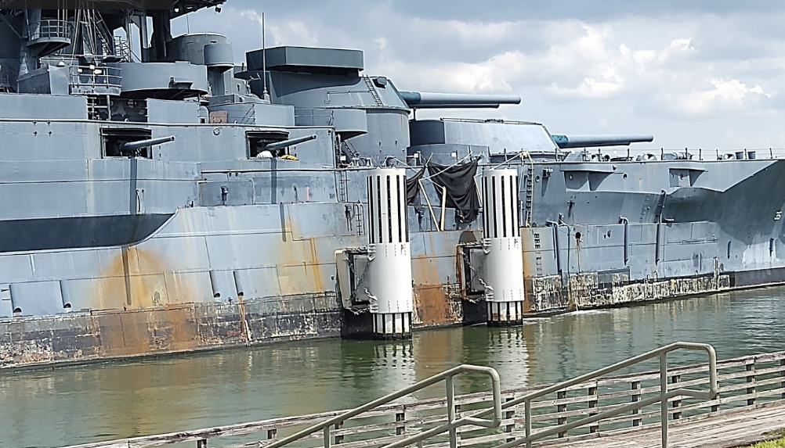
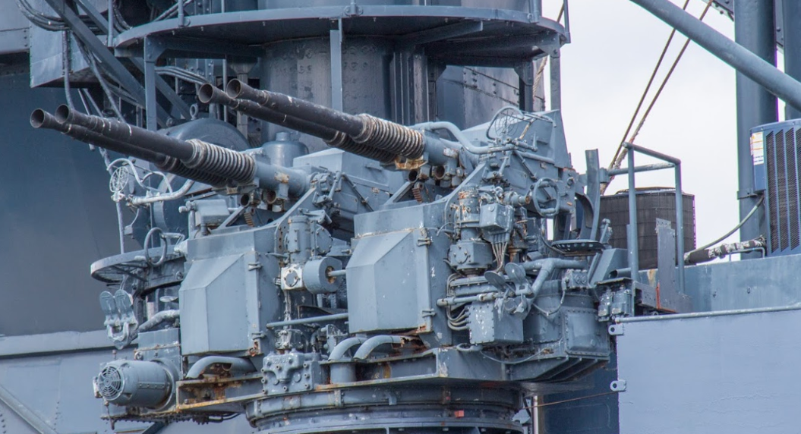

전함을 고철로 팔면 얼마가 나올까 ? - 1947년 미해군성 국회 청문회
게시: 2020-10-29T06:30:08+09:00
제1, 2차 세계대전 때 활약하던 거함거포 시절의 전함들은 현재 거의 남아 있지 않습니다. 미해군의 경우 아이오와(Iowa)급 전함 몇 척을 박물관으로 개조하여 전시하고 있습니다만, 정말 그것 뿐이고 대부분의 전함은 지구상에서 사라졌습니다. 이들은 모두 어디로 갔을까요 ? 전쟁이 끝나면 칼과 창을 녹여 낫과 쟁기를 만든다고, 낡은 전함들도 그렇게 해체하여 고품질의 강철을 얻었습니다.

(제2차 세계대전이 끝나자 처참하게 해체되는 HMS Nelson과 HMS Rodney... 뒤에 있는 다른 1척은 무슨 전함인지 모르겠군요. 원래는 소련과의 분쟁에 대비해서 넬슨급 전함들도 남겨둘 것을 고려했으나 역시 1925년에 진수된 낡은 전함이다보니 속력이 23노트로서 항공모함을 따라다니기엔 너무 느려서 결국 저 신세가 되었습니다.) 그러나 좀 이해가 안 가는 부분도 있습니다. 많은 돈과 시간을 들여 애써 만든 전함들이고 전쟁이 끝났다고 해서 당장 군함 수명이 끝나는 것도 아닐텐데, 나중에 전쟁이 날 때를 대비해서 그냥 일단 항구에 정박시켜 놓았다가 필요시 다시 꺼내 쓰는 것이 더 낫지 않을까요 ? 그리고 역사적으로 보면 전함들을 표적함으로 써서 다른 군함들이나 군용기들이 실탄 사격 훈련용 타겟으로 사용되는 경우도 있던데, 그런 경우는 뭐고 이렇게 해체하여 고철을 뽑아쓰는 경우는 뭘까요 ?

(제가 이 글을 쓰게 된 계기가 된 자료입니다. 궁금해서 찾아보니 나오더군요. 구글 덕분에 참 좋은 세상이 되었어요.)

(전함과 항공모함은 배수량이 엇비슷한 경우가 많습니다. 그러나 해체시 나오는 고철의 양은 항공모함이 전함의 60% 수준에 불과합니다. 전함은 두꺼운 강철판을 장갑으로 두르고 있기 때문이지요. 전함은 영어로는 battleship이라고 부르지만 불어로는 cuirassé, 즉 장갑함이라고 합니다. 영어보다는 불어 단어가 전함이라는 독특한 군함의 본질을 더 잘 표현한다고 할 수 있습니다.) 전함 1척을 해체하면 강철이 대략 24,571톤 정도 나옵니다. 그런데 당연히 단단한 전함을 해체하는데는 돈이 들어갑니다. 일단 전함은 이물부터 고물 끝까지 다 균일한 강철로 된 것도 아닐 뿐더러 파이프나 보일러 등등 어떤 부분은 청동이나 황동, 주철 등 다양한 재료로 만들어져 있는 물건입니다. 그런 것을 숙련된 해체원이 구별해서 뜯어내야 합니다. 그런 인건비도 있겠지만 그 전함을 해체할 작업장을 빌리는 비용, 즉 부동산 임대료도 계산해야 하고, 또 그렇게 뜯어낸 고철을 수송하는 비용도 생각해야 합니다. 그러다보니 전함 5척을 해체하는데 드는 비용이 대략 1,842,825 달러, 즉 척당 368,565 달러가 듭니다. 이게 1947년 가치로 그런 것이니 지금 가치로는 대략 430만 달러가 넘습니다. 원화로 환산하면 약 48억원 정도입니다.

(2002년 ~ 2020년 사이의 강철 가격입니다.)
그러면 당연히 그 다음 질문은 24,571톤의 고철이 어느 정도의 가치를 가지느냐 하는 것이 됩니다. 짐작하다시피 강철 가격은 세계 경제 상황 뿐만 아니라 지역에 따라서도 크게 변합니다. 따라서 그때그때 달라요가 답입니다만, 2020년 10월 미국을 기준으로 하면 대략 톤당 600달러 정도입니다. 즉 전함 1척을 해체하여 얻을 강철 24,571톤을 팔면 지금 14,742,600 달러, 대략 160억원을 받을 수 있습니다. 해체 비용 48억원을 생각하면 무려 112억원 흑자입니다 ! 하지만 기뻐하긴 이릅니다. 1947년과 2020년은 경제 상황도 다르지만 강철의 수요량과 생산량의 규모가 다를 수 밖에 없고 당연히 강철 가격은 많이 달랐을 것입니다. 또 당시 달러 가치도 지금과는 달랐을 것이고요. 그래도 대략 전함 1척을 해체해서 얻을 가치를 알아볼 방법이 없을까요 ? 있습니다. 당시 미해군성에 대한 미 의회 청문회에서의 기록에 따르면 구축함 1척을 해체해서 얻을 수 있는 수익은 1척당 2천달러라고 되어 있습니다. 당시 구축함 1척 해체하면 1200톤의 고철이 나왔고, 구축함 24척을 해체하는데 43만2천불, 즉 척당 1만8천불이 들었습니다. 역산하면 구축함 1척 해체하면 얻을 수 있는 1200톤의 고철에 대해 1만8천 + 2천 = 2만불을 받을 수 있다는 이야기입니다. 즉, 당시 강철 1톤에 16.7달러였다는 이야기네요. 이걸 다시 전함에 적용하면 당시 전함을 해체하여 그 고철을 팔면 약 41만 달러를 받을 수 있다는 계산이 나옵니다. 해체 비용 약 37만 달러를 빼면 4만 달러이고, 이걸 다시 현재 가치로 환산하면 약 47만불, 원화로 대략 5억2천만원 정도입니다. 배수량 3~4만톤 정도 되는 거대한 전함을 해체해서 얻는 이익치고는 너무 낮은 가격 아닐까요 ? 만재 배수량 약 2만8천톤으로서 1912년 진수된 전함 USS Texas (BB-35)의 경우 건조 비용은 당시 가치로도 무려 583만 달러가 들었습니다. 그런데 이걸 해체해서 4만불, 현재 가치로도 고작 5억원 정도를 받는 것은 지나친 낭비 아닐까요 ? 꼭 그런 것은 아닙니다. 항구에 세워둔 선박은, 그것이 군함이든 화물선이든 끊임없이 돈이 먹습니다. 일단 부동산 비용이 많이 나갑니다. 항만은 많은 예산을 들여 만든 시설이고, 거기에 4만톤 짜리 전함을 묶어두는 것도 당연히 비용입니다. 국가 소유인 해군 항만시설에 국가 소유인 전함을 정박시키는 것이니 그건 돈이 안 든다고 생각하실 수도 있지만, 원래 그 자리는 신형 군함을 세워놓아야 할 자리였으니 밀려난 신형 군함을 위해서 더 넓은 공간을 마련해야 한다는 뜻입니다. 보통 32피트짜리 요트 1척 정박시키는데 정박료만 1년에 400~500만원 나온다니까, 전함은 훨씬 더 많이 나오겠지요. 게다가 탄소강으로 만든 전함을 소금물 위에 띄워놓고 비바람을 맞추면 눈 깜짝할 사이에 녹투성이가 됩니다. 따라서 주기적으로 페인트칠 같은 방청 작업을 해줘야 합니다. 미해군의 경우 수상함과 잠수함의 페인트칠에만 연간 30억 달러의 비용을 쓰고 있습니다. 목판으로 만들던 나폴레옹 시대의 전열함들과는 달리 제1,2차 세계대전 때의 전함들은 강철로 만들었지만 그래도 목제 전열함처럼 물이 샙니다. 스크루 축이 함체 밖으로 나오는 부분은 고무 등의 패킹으로 처리되지만 그래도 역시 조금씩 물이 새기 때문입니다. 그 외에도 각종 펌프로 바닷물과 연결된 구멍들이 있는데, 이 쪽으로도 물이 샐 수 있습니다. 이렇게 조금씩 생기는 물을 퍼내기 위해서는 펌프가 필요하고, 펌프를 유지하려면 전기 설비가 살아있어야 합니다. 엔진과 보일러 등을 유사시 쓸 수 있도록 정기적으로 유지보수하는 것에도 돈이 들어갑니다. 게다가 군사 장비니까 경비병도 세워야 하는데, 그런 경비병 월급과 경비병 숙소 및 초소 시설 등도 다 비용입니다. 그래서 결국 앞으로도 안 쓸 것 같은 전함은 과감히 scrap해서 고철값이라도 건지는 것입니다. 그런데 여기에도 머리를 써야 합니다. 전쟁이 끝나고 나면 많은 양의 고철이 시장에 풀립니다. 거기에 전함 여러 척을 한꺼번에 폐기처분하면 고철 가격이 급락할 수 밖에 없습니다. 따라서 1947년 미해군성에 대한 미 의회 청문회에서도 그에 대한 논의가 되면서, 고철 가격이 상승할 때까지 좀 기다렸다가 scrap 작업을 하겠다는 답변이 나옵니다. 그러나 계속 녹이 슬고 있기 때문에 무한정 기다릴 수는 없다고 하네요.

(제독님과 의원님이 고철값을 제대로 받으려면 얼마나 기다렸다 전함을 폐기하는 것이 좋겠는가, 또 강철괴가 녹이 슬어 없어지는데 얼마나 시간이 걸리는지 논의하고 있습니다. 국회 청문회에서는 이렇게 기록에 남아 주요 사료가 될 이야기들이 오가야 하는데, 우리나라 국회에서는 언제쯤 이런 질의응답이 나오게 될까요?)

(D-day와 이오지마 상륙작전 등 주요 전투에 참여했던 역전의 용사 USS Texas입니다. 저 새장형 마스트 (cage mast)는 제1차 세계대전 즈음의 미국 전함들의 특징이지요. 제2차 세계대전에 참전할 때는 다 새로운 마스트로 바꾸었습니다.)
일부 전함들은 박물관으로 전환되어 지금도 살아있습니다. 1912년 진수된 만재 배수량 2만8천톤의 전함 USS Texas는 1947년, 무자비한 해군성의 숙청에서 살아남아 텍사스 주 정부에 양도되어 박물관이 됩니다. 그러나 박물관이 되는데에도 돈이 듭니다. 난데없이 전함 한척이 공짜로 생겼다며 좋아하던 텍사스 주 정부는 시작부터 '아, 우리에게 돈 먹는 하마 한 마리가 굴러왔구나'라고 깨달아야 했습니다. 당시 매릴랜드 발티모어에 있던 이 전함을 텍사스 휴스턴 옆의 산 하신토(San Jacinto)로 끌고 오는데만도 225,000달러, 현재 가치로는 260만 달러 (원화로 29억원)가 들었기 때문입니다. 페인트칠하고 정박할 곳을 마련하고 하는 등의 작업에 결국 많은 돈이 들었고, 나중에는 유지 보수에 돈이 너무 많이 들어가는 갑판 목재를 그냥 콘크리트로 바꾸기도 했습니다. 그러나 나중에는 결국 그것도 갈라지고 물이 샌데다, 돈을 들이지 않으니 너무 녹이 슬고 망가져서 유령선 같은 흉물이 되었습니다. 결국 전함 텍사스를 제대로 된 박물관으로 만들자는 모금 운동이 벌어졌는데 2000년 대에 들어 2천9백만 달러가 모금되었다고 합니다. 그러나 그러고도 2010년과 2017년에 배수 펌프 고장으로 인한 침수가 발생하여 또 추가로 돈이 많이 들어갔다고 하네요.

(발티모어에서 산 하신토까지의 거리입니다. 비행기로는 3시간 걸립니다.)

(지금 Texas 호는 휴스턴 옆 갤버스턴 만 안쪽에 보존되어 있습니다.)


(수리에만 2천9백만 달러가 들어간 돈먹는 하마치고는 모양새가 좀 그렇지요 ? 앞으로도 많은 돈을 먹게 될 박물관 Texas 호입니다.) Source : books.google.co.kr/books?id=dw1EAQAAMAAJ&pg=PA1330
www.in2013dollars.com/us/inflation/1947
steelbenchmarker.com/files/history.pdf
www.military.com/daily-news/2014/05/19/a-fresh-coat-of-paint-can-save-navy-billions.html